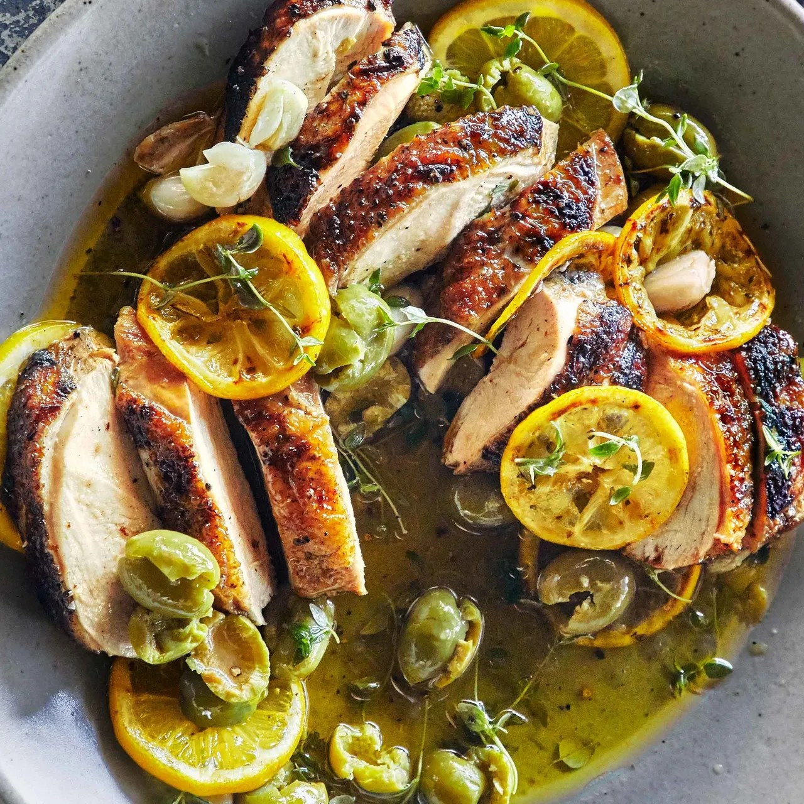

Grilled Chicken With Lemon and Thyme

A grilling recipe that's make-ahead friendly and doesn't have to
marinate for hours to pick-up great flavor? Oh have we got you
covered. The chicken can be grilled an hour ahead of time—it gets more
flavorful as it hangs out in the lemony marinade. And remember: When
it comes to grilling chicken breasts, it's skin-on, bone-in all the
way. The meat stays juicier, and you get the bonus of crispy skin.
Ingredients (4 servings)
-
3 Tbsp. plus 1/2 cup extra-virgin olive oil, divided, plus more for
grill
- 4 skin-on, bone-in chicken breasts (about 3 lb.)
- Kosher salt, freshly ground pepper
- 2 lemons
- 4 garlic cloves, crushed
- 3 large sprigs thyme
- 1 cup torn pitted Castelvetrano olives
Steps
-
Prepare a grill for 2-zone heat (for a gas grill, set one burner to
medium-high and one or two burners to low; for a charcoal grill, bank
most of the coals on one side). Lightly oil grate. Pat chicken breasts
dry; season generously all over with salt and pepper. Place on a
rimmed baking sheet; let sit at room temperature at least 30 minutes
and up to 1 hour.
-
Thinly slice 1 lemon crosswise into rounds; pluck out seeds. Place
half of lemon slices in a small bowl. Add garlic and 1 Tbsp. oil and
toss to coat; season with salt and pepper. Set remaining lemon slices
aside for serving. Slice remaining lemon in half and squeeze juice
into another small bowl (you should have about 1/4 cup). Set aside.
-
Pat chicken dry again (the salt will have drawn out more moisture) and
rub with 2 Tbsp. oil. Grill oiled lemon slices over hot side of grill,
turning once, until charred in spots, about 3 minutes. Transfer to a
plate. Grill chicken on cooler side of grill, skin side down, until
skin is browned and starting to crisp, 15–20 minutes. Turn chicken
over, cover, and continue to grill until an instant-read thermometer
inserted into the thickest part of breasts registers 160°F, 8–10
minutes longer. If desired, uncover grill, move chicken over to hotter
side, and lightly char a minute or two. Transfer to a cutting board
and let rest 10–15 minutes.
-
Pull chicken meat from bones and slice 1/2" thick. Place on a rimmed
platter, shingling slices. Scatter thyme sprigs, olives, grilled lemon
slices, and reserved fresh lemon slices over. Season with more salt
and pepper; drizzle reserved lemon juice and remaining 1/2 cup oil
over. Let sit at least 15 minutes and up to 1 hour before serving.